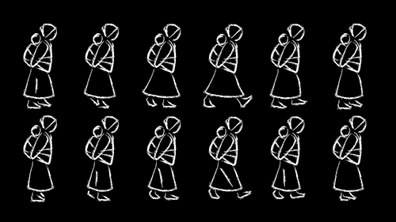

Process
Violinist and songwriter Joe Kye enlisted me to design and code a live audio visualization to accompany his song “Arirang”. The song was inspired by his life as a Korean immigrant and a Korean folk song of the same name. I worked to not just visualize Joe's music, but to visualize the the story behind the song as well.
Joe and I met while I was collaborating on a visualization with Jiayi and Shih-Wen Young for a different song. Above is a video of us testing my code for that project. A week before the performance, I was charged with developing the visuals for “Arirang” on my own.
The visualization combined pre-rendered sprites created in Adobe Illustrator with elements generated live within Processing. Each element was created or modified using audio input from Joe's performance.
Joe had heard the folk song as a child, when his mother would hum it as she carried him on her back. The project gave us an opportunity to learn more about the song's history and significance, which helped us add meaning to the performance and visualization.